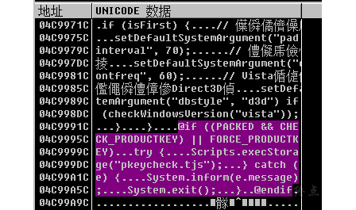
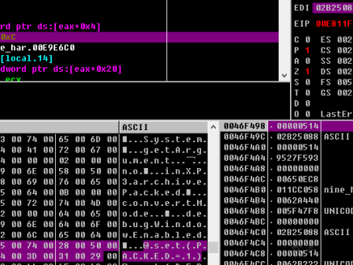
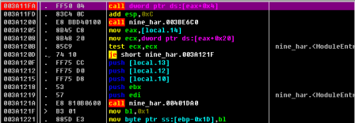
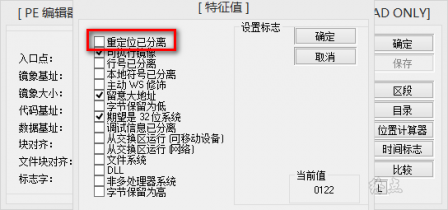
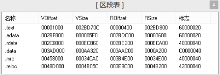
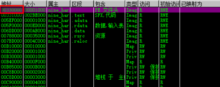
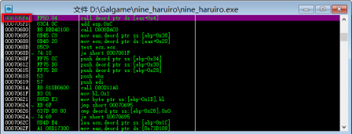

它离上图的00EE1A88较近，在这里设断并重新载入游戏，每次触发断点时单步步过观察返回值，发现它会返回一个UNICODE字符串指针，内容为脚本代码(因为日文乱码，可能不会被OllyDbg自动解析，请自行将eax指示的地址在数据窗口中追踪查看)，并将eax寄存器压栈，那么我们之前观察到的堆栈中的代码应该就是它干的好事。
观察它在最后一次的返回内容，使用十六进制编辑软件(或直接利用OllyDbg的数据窗口)将04840474中的内容，直到明显不能被人类阅读为止(准确的说应该用字符串结束标志0x0000判断结束)，全部复制出来并查看。
这就是pkeycheck.tjs的内容。【从内存中拷贝出来的字符是UNICODE宽字符，因此首次打开时应使用UTF16LE-无签名，然后会得到含有乱码的代码，全选复制粘贴到空的新记事本中，以当前系统代码页(GB2312)保存，再以Shift-JIS编码打开便可完全去除乱码。】
2. 在图7所示的00E18554附近，可以看到一个函数
3. 在00E1854F的调用过程中，有一个函数
00E811FA |. FF50 04 call dword ptr ds:[eax+0x4]
它每次执行后的edi总是以ASCII“TJS2100”开头，后面可能接一串代码，但并不全都可读，另外，每次调用ReadFile读入一块大小合理的数据时，总会调用00E811FA函数，再根据之前对于“TJS2100”的猜测，该函数的作用可能为解压文件，准备交给后续的函数进行解密。
结合我们的分析，有了以上信息我们就可以开始进行破解了。
在本人破解的过程中使用的方法如下，因为在实践过程中没有完整的概念，所以或许方法的发现和入手点看起来较为唐突，过程仅供参考，读者可根据自己的发现来实现。
注意到00EE1A78的脚本解析函数在解析pkeycheck.tjs之前的一次，获得的脚本中最后有这样一句

图14
这样我们可以得知什么时候会调用pkeycheck.tjs中的函数。
另外，在每次载入游戏，00E811FA处的函数被第一次执行时，它会解压出一块文件，其中包含如下信息：

图15
结合图14和图15，我们可以认为，若PACKED == 0，则不会调用校验函数(我没有观察到程序设置过FORCE_PRODUCTKEY这个变量)。那么破解思路就是在00E811FA处设置hook，当该函数被首次调用时，先正常履行其功能，在执行后修改edi开始的数据，将PACKED=1改为PACKED=0。
按照1距离edi位置的偏移，要做的就是
mov BYTE PTR [edi + 017Ch], 30h ;0x30为‘0’的ASCII码(准确的说，0x0030是‘0’的UNICODE码，在文件中保存为小尾顺序)。
以上即为真正起破解作用的一句汇编代码。
接下来开始破解补丁的制作过程，而在最开始有一些很重要的客观因素需要我们分析。
1. 要制作什么样的补丁？
根据以上的所有分析，我们要利用hook技术制作补丁，要做的就是在00E811FA这个函数首次执行后修改其解压出的内容。【关于hook的概念并没有十分简洁的解释，可自行查阅资料并根据下文操作理解。】
2. 00E811FA这个函数存在于哪里？
根据函数的地址，以及内存分布情况(在OllyDbg中按Alt+M可查看当前全部内存块范围)可知它位于nine_haruiro.exe的.text段，即代码段中。这意味着在磁盘中它是位于主程序nine_haruiro.exe中的，而不是被主程序载入的动态链接库中的函数。对于后者则需要考虑更多的问题，如载入时机等，在本例中不做赘述。
3. 重定位问题
在本例中，一个很严重的问题便是重定位。判断程序是否有重定位的一个好方法便是重启计算机，然后再次使用OllyDbg载入游戏，这时会发现原来00E811FA处的函数却变为了003A11FA

图16
【如果真的按照这个笔记重做一遍的话会发现前面的所有函数地址都对不上，问题就来源于这里】
这说明游戏的主程序每次被操作系统载入到内存中时使用的是随机基址，也就是说代码映射的位置是不确定的。详细的原理很有讲究，可查阅相关资料。但对我们而言，在破解时就需要警惕了。如果在编程时写死了hook的位置，比如00E811FA，那么写出来的补丁只能正常使用一次，下次换个基址则不知道会发生什么了。
顺便提一个小技巧，可以使用LordPE将游戏主程序中的PE信息进行修改，禁止其重定位，在特征值中勾选重定位已分离即可。
注意这个方法也有一些危险，首先防止重定位可能会导致某些情况下向内存中载入代码时出现冲突，造成程序崩溃。另外修改该值会导致exe文件本身发生了变动，若应用程序有自校验的话可能会被检测到。但取消重定位之后程序中的代码位置就固定了，这时再得到的函数地址是不变且有效的。该方法可用于脱壳等许多其他用途，是个偷懒摸鱼的好技巧。

图17
4. 堆栈的限制
kirikiri本身是基于堆栈的虚拟机，因此在hook时存在一个很严重的问题——我们必须保证堆栈环境的正确。基于堆栈的虚拟机会在堆栈中大量保存运行环境，所以堆栈的内容是紧密相关的，而若我们在hook时修改了堆栈中的内容，又退到虚拟机中运行，则很可能导致程序崩溃。
例如：正常的虚拟机逻辑中，函数A→函数B→函数C，其中函数B取用了函数A留在堆栈中的内容(比如mov al, BYTE PTR [esp – 04h])。当我们hook时，可能会变为这样：函数A→进入hook函数→函数B→退出hook函数→函数C。乍一看没有问题，然而进入hook函数时，系统会将返回地址压栈，而这一变化就会导致函数B取出的数据不正确(位置上相对栈顶的偏移不对了)。
因此考虑hook逻辑的实现，我们在00E811FA之后，即00E81200作为真正的hook位置，它好在edi还没发生变动，且可以较好地实现“只有第一次被调用时才修改内容”的逻辑。
下面正式开始破解补丁的编写：
1.这里不采用更改PE属性的方法，而是在补丁注入时检测内存基址，动态计算hook位置。
【接下来的内容主要与PE知识有关，若觉得难以理解可直接使用前文技巧跳过本节，但需要自己通过OllyDbg确定基址固定后的函数位置。】
主要使用公式：File Offset = VA – ImageBase – Δk
其中File Offset指的是代码(机器码)存放在磁盘文件中的偏移，VA指的是exe载入到内存中时，代码在内存中的虚拟地址，Δk指的是代码所在区块的虚拟偏移量与文件偏移量的差。
在本例中，区块信息如下：

图18
我们关注的函数位于.text段，其Δk = VOffset - ROffset = 0x1000 – 0x0400 = 0x0C00。
本次载入游戏时的ImageBase为00330000

图19
接下来我们需要确定目标函数在磁盘文件中的偏移，即File Offset。
如图16所示，本次载入中VA = 003A11FA，则对应的File Offset = 003A11FA – 00330000 – 00000C00 = 000705FA。
在OllyDbg中选中 003A11FA，右键→查看→可执行文件，验证结果正确。

图20
而由前分析，我们真正选中的hook地址的File Offset为这句之后的00070600。
设置hook时，再由VA = File Offset + ImageBase + Δk = 00070600 + ImageBase + 00000C00即可得到实际的内存虚拟地址。
2. 在设计hook函数时，千万小心对于堆栈的保护，必须注意的是通过call调用函数时会将返回地址压栈。本例中使用Microsoft Detours库进行hook，而该库对于inline hook的处理方式并没有明确说明，试错时可以使用OllyDbg的StrongOD插件强行让游戏挂载DLL，可以方便调试，尤其注意触发hook函数周围的执行流程和堆栈操作。
综上所述，最终补丁代码如下：
////////////////////////////////////////////crack.h
#pragma once
#include "detours.h"
#pragma comment(lib,"detours.lib")
typedef int
(__cdecl* PFN_AfterDecompressFile)(
void
);//声明函数指针，由于不确定实际原型，故视为不接受参数
extern DWORD BaseAddr; //镜像基址
extern DWORD AfterDecompressFileVA; //真正的hook地址
extern PFN_AfterDecompressFile OrgAfterDecompressFile; //原函数入口指针(Trampoline)
int CrackAfterDecompressFile(void); //hook函数
extern "C" __declspec(dllexport) void Useless(); //无用的导出函数，只是便于DLL挂载
////////////////////////////////////////////crack.cpp
#include "pch.h"
#include "crack.h"
__declspec(dllexport) void Useless() {}
int __declspec(naked) CrackAfterDecompressFile(void) //裸函数形式，防止不必要的堆栈变化
{
static bool isFixed = false;
if (!isFixed) { //只有第一次被调用时修改内存内容
__asm mov BYTE PTR [edi + 017Ch], 30h
//上句将edi开始的解压内容中的"1"改为"0"
isFixed = true;
}
__asm jmp DWORD PTR [OrgAfterDecompressFile]
//使用jmp做跳转，防止破坏堆栈
}